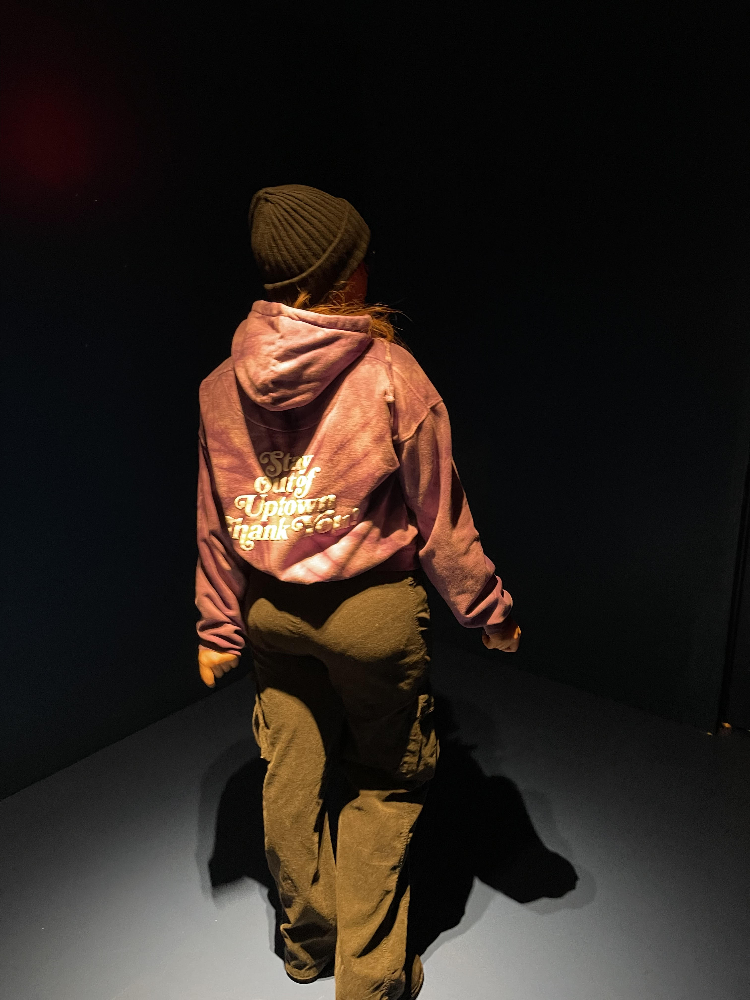
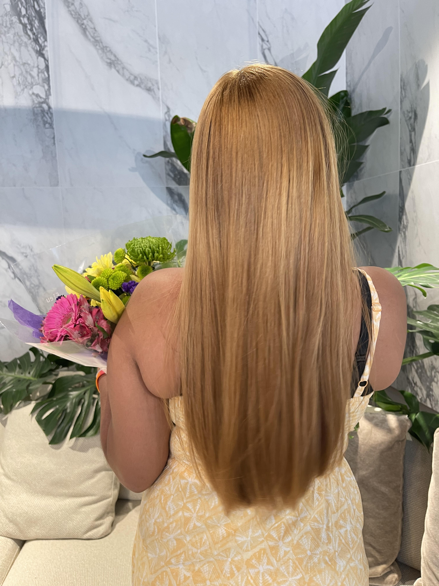
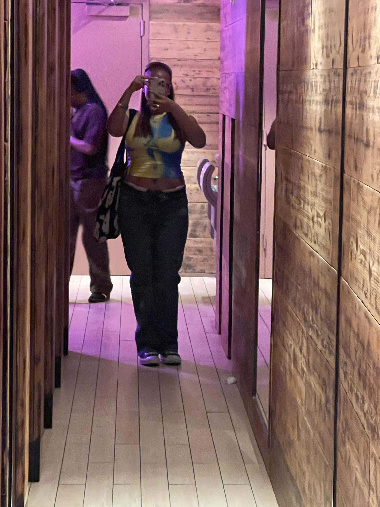
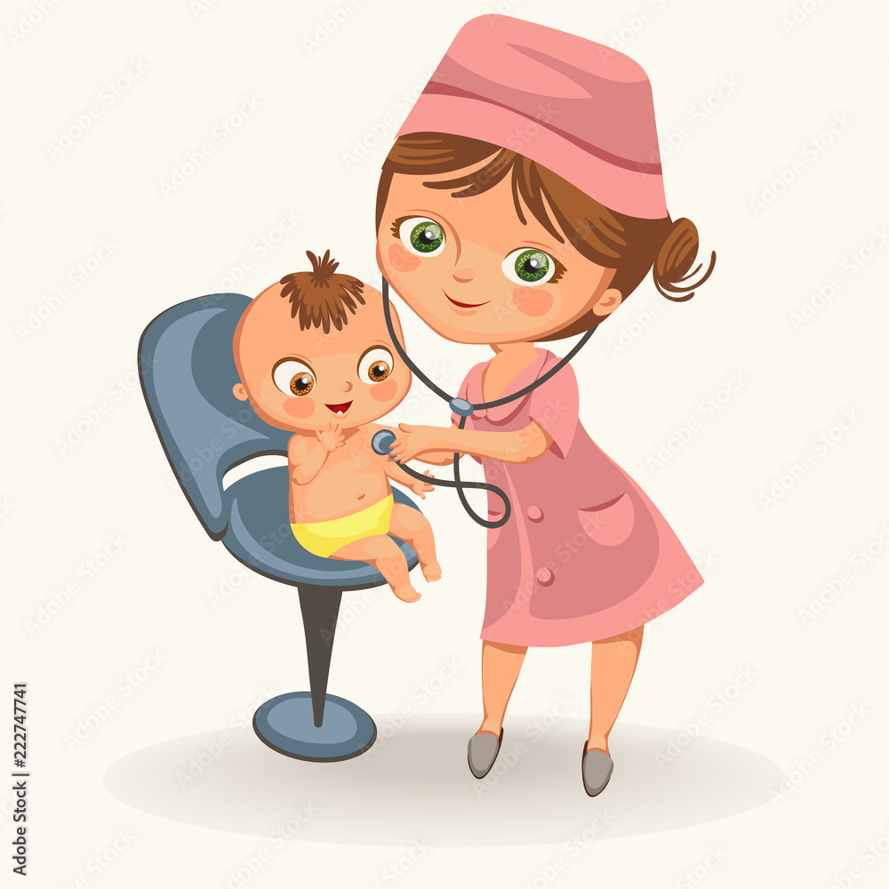

My name is Seline;) and I'm a current senior! #co24. Currently I am in a volleyball varsity team but I've been playing sports my whole life that conclude of: softball, track&field, and cross country. I am a born and raised dominican who loves being in tropical islands and listen to old bachata. Some of my other interest are fashion, going shopping, trying new foods, traveling, and going on pinterest lol. I ❤️ fashion so so much and seeing others different and unique style. I also enjoy hanging out with friends downtown and exploring the city and new food places/courts. I love shopping and posting on my pinterest board. My favorite color is pink 🎀 and favorite artist is Lana Del Rey.
What I would love to do in the future is to become pediatrician 👩🏽⚕️and be as successful and be independent. For this to happen I would need to earn a doctor of Medicine (M.D.) or a doctor of Osteopathic Medicine (D.O.) from a medical school. Than and admission to medical school requires a bachelor's degree, MCAT scores, and sufficient undergraduate science coursework.My dream college is NYU and I would want to major in pre-med and minor in business. I've always dreamed on becoming a pediatrician due to my love for kids and wanting to help them and care for them. I am excited to attend college and expirence the college life lol and get to meet new friends and learn. Very excited to see what the future holds for me.
My love for Lana Del Rey started last year when I heard "Cinnamon Girl" from her NFR! album. I listen to her whenever I need to feel relaxed and calm. Her soothing voice clams me and her beautiful lyrics make me so happy. Her cinematic music videos are master peices and I just think everyone should love her. Lana Del Rey aka Elizabeth Woolridge Grant, was born june 21, 1985 making her a cancer ♋️ like me. Lana has won many grammy awrads for her music videos. My favorite album is Ultraviolnce, Born to Die, and Born to Die: Paradise Edition but all her albums are top 10. My current favorite song is "Chemtrails over the Country Club" and "How to Disapear". I Recommend everyone to listen to this queen and love her just like i do lol;)